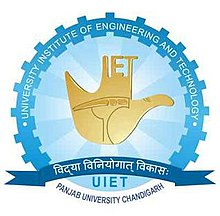

University Institute of Engineering & Technology
Uiet.com

- Computer Science and engineering
- Information technology
- mechanical
- Electronics and communication
- Electrical
- Biotechnology
Biotechnology
Vision of Biotechnology Department
To nurture world-class bioengineers with a potential to innovate, invent and disseminate knowledge for the benefit of society and environment.
Missions of Biotechnology Department
- Regular updation of the course curriculum to cater to the needs of academia and industry.
- Initiate multi-disciplinary programs through academia-industry interface with special emphasis on implementation of bioprocess design and scale-up.
- Emphasis on recent trends in bioengineering through organization of conferences, symposia, workshops.
- Starting dedicated Postgraduate Programmes (M.Tech, PhD, M.Tech-PhD Integrated Programme).
- Faculty development programmes.
Computer Science & Engineering
Vision
To be recognized as an international leader in Computer Science and Engineering education and research to benefit the society globally.
Mission
-
To move forward as frontiers of human knowledge to enrich the citizen, the nation, and the world.
-
To excel in research and innovation that discovers new knowledge and enables new technologies and systems.
- To develop technocrats, entrepreneurs, and business leaders of future who will strive to improve the quality of human life.
- To create world class computing infrastructure for the enhancement of technical knowledge in field of Computer Science and Engineering.